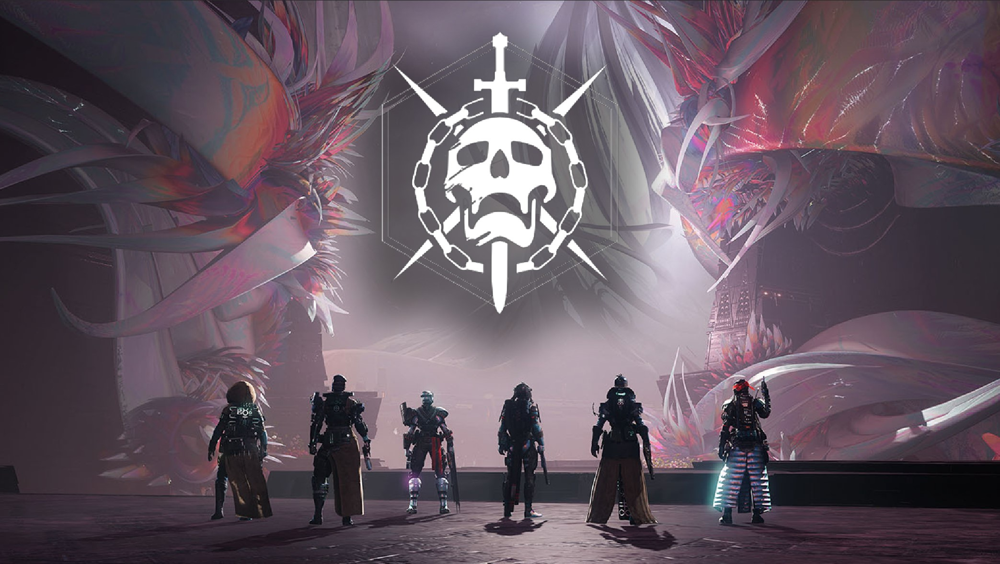
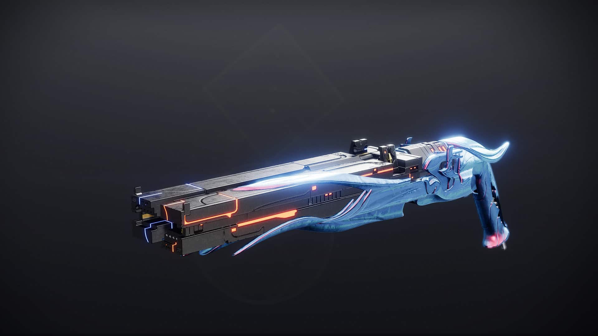

What is the lightfall DLC?
*The Lightfall DLC, is one of destiny 2's seventh DLC. The DLC has introduced many new subclasses for the titan, hunter, and warlock. The subclass is called "Strand". The DLC features a new PVE, PVP, and many other updated modes/maps that we will discuss here on our forum! Enjoy*
- * Raids and PVE:
- There is a new raid called: "Root Of Nightmares". KF features a challenge mode and easy mode. Both modes, have the guardians go through 4+ encounters. Many noteable
encounters include connecting nodes and multiple boss phases . Other PVE includes a new campaign, one strike, and NPC characters that can offer awsome side quest. It may sound disappointing
that there is only one new strike. However, other strikes such as "Arms Dealer" and many more have been updated!
 - * Crucible:
- The Crucible has lot's of fun with the new DLC. For starters, there a lot's of bug fixes and nerfs that have been done on the weapons. Furthermore, there are
new maps to play on. One map that comes to mind is "Meltdown". Meltdown is a updated map that is going to be introduced for playerd in clash, rumble, and other
gamemodes in pvp. In addition, with the image below, we have the dreaming city from the last wish raid!

- * Weapons and others:
- With the new DLC, there are new weapons we can use to play around with. One weapon is the "Conditional Finality Shotgun". This weapon is not a great example, of an exotic quest weapon.
In order to obtain this weapon, you have to grind the raid boss. However, fair warning, this raid will become more difficult as time goes on. Going back, this weapon has a awsome exotic
perk, that can split two elements, solar and stasis. VERY USEFUL FOR PVE!
